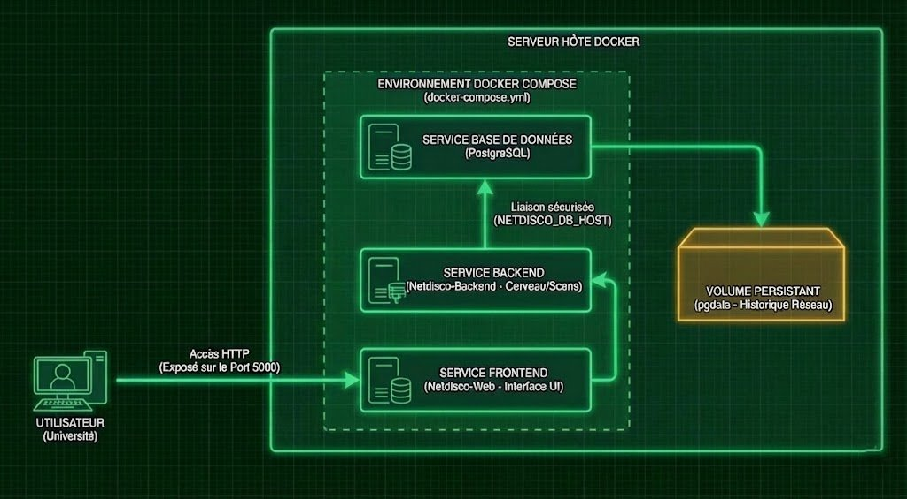
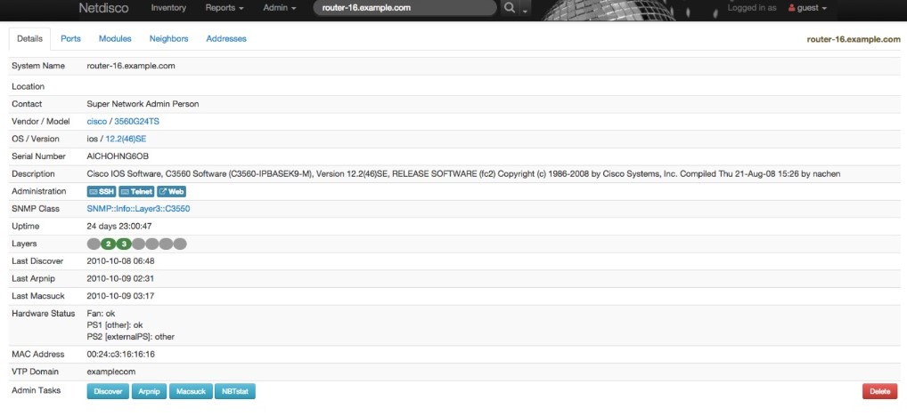
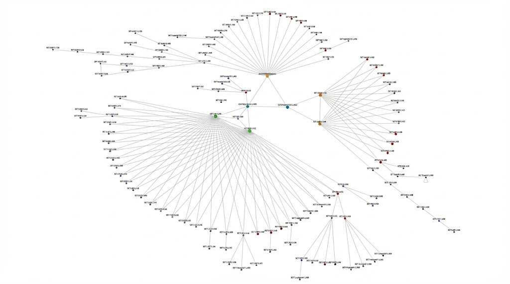
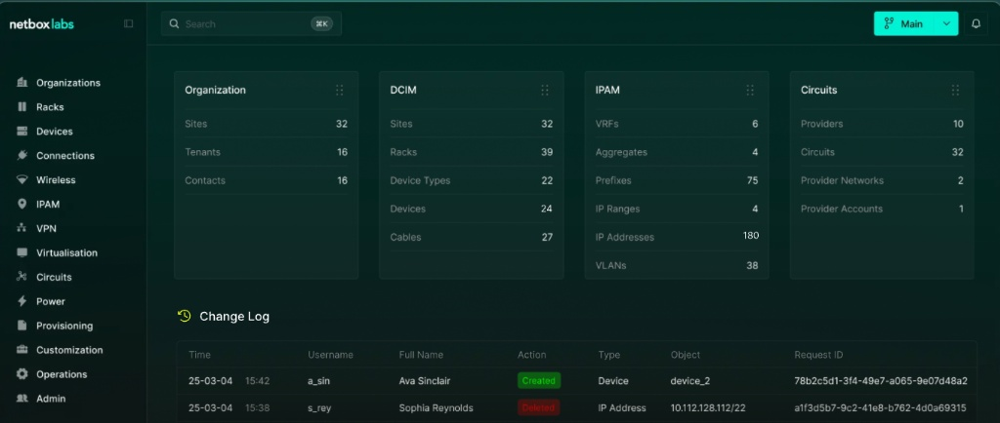
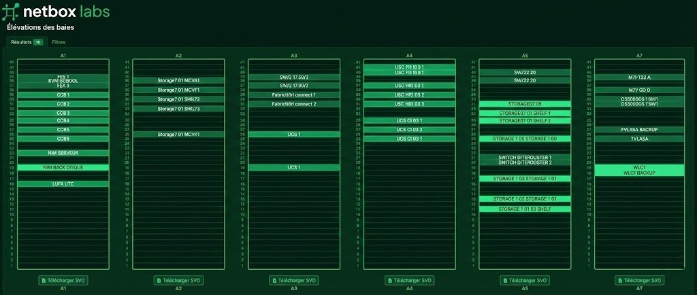
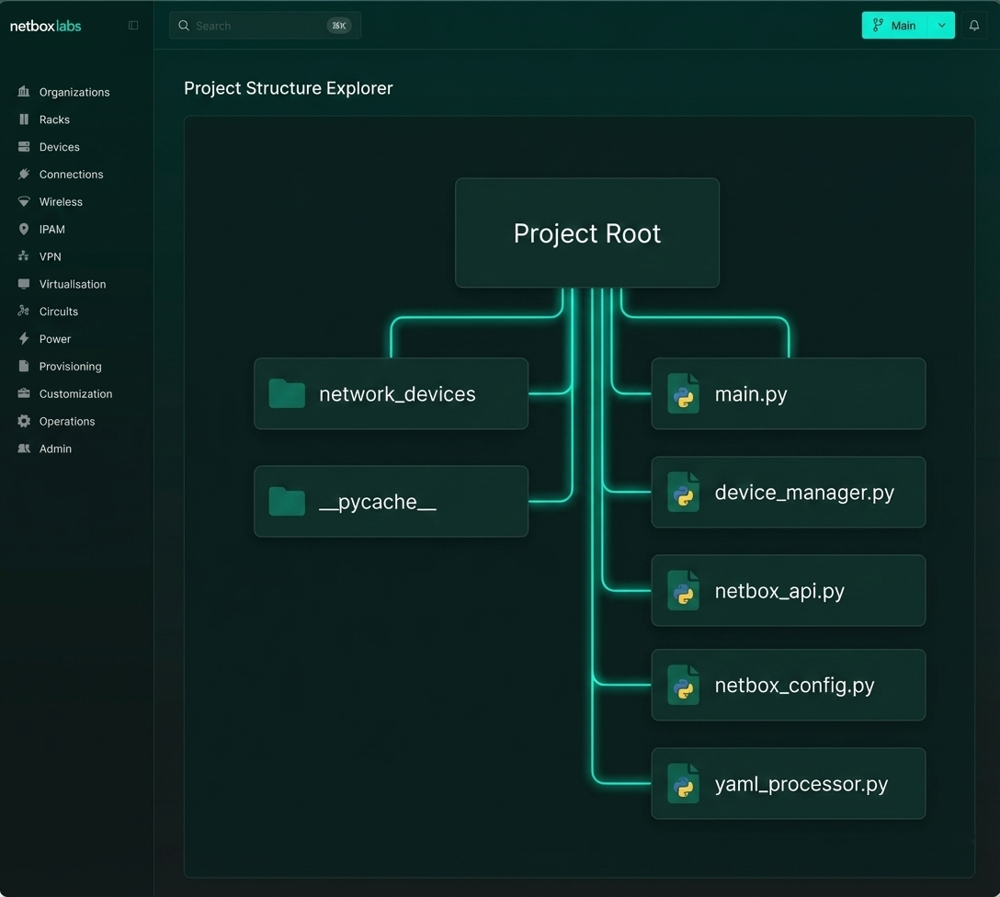

Surveiller
Mesurer les performances, superviser les équipements actifs et maintenir une documentation technique fiable (Source of Truth).
Apprentissages Critiques - Niveau 2 :
➥ Mettre en œuvre la surveillance d'incidents de sécurité
AC35.01 | Surveiller l'activité du système d'information
Modernisation d'Architecture : De Monolithique à Micro-services
Dans le cadre de la refonte des outils de supervision de la DSI (Direction des Systèmes d'Information) de l'UTC (Université de Compiègne), j'ai mené une étude comparative pour remplacer une installation obsolète. J'ai conçu et déployé une architecture conteneurisée sous Docker :
- Isolation des Services : Séparation stricte entre le frontend web (serveur Hypnotoad), la base de données PostgreSQL et le backend de collecte.
- Persistance des Données : Configuration des volumes Docker (./nd-site-local, pgdata) pour garantir la conservation des logs et de l'inventaire lors des redémarrages de conteneurs.
Déploiement Automatisé (Infrastructure as Code)
J'ai industrialisé le déploiement de la solution de supervision Netdisco pour la rendre portable :
- Docker Compose : Définition de l'infrastructure via un fichier docker-compose.yml orchestrant les services netdisco-web et netdisco-do (backend).
- Configuration par Environnement : Gestion des paramètres critiques (NETDISCO_DB_HOST, NETDISCO_DOMAIN) via injection de variables d'environnement.
AC35.02 | Appliquer une méthodologie de tests de pénétration (Audit & Découverte)
Configuration Avancée du Protocole SNMP
Pour assurer la visibilité sur un parc hétérogène, j'ai configuré finement le moteur de collecte SNMP de Netdisco :
- Collecte Sécurisée : Implémentation de communautés SNMPv2c et tests du protocole chiffré SNMPv3 (AuthPriv avec SHA/AES) pour les cœurs de réseau critiques.
- Discovery Engine : Configuration du backend pour exécuter des SNMP Walk sur les MIBs standards afin de remonter automatiquement la topologie réseau (LLDP/CDP).
Optimisation des Processus de Polling
Afin de ne pas surcharger les CPU des équipements réseaux lors des scans, j'ai ajusté la fréquence des tâches planifiées dans le fichier deployment.yml.
AC35.03 | Réagir face à un incident de sécurité (Gestion des Actifs)
Gestion Centralisée : Source of Truth (SoT)
J'ai structuré la gestion de l'inventaire autour de l'outil Netbox, agissant comme référentiel unique SoT (Source de Vérité) pour l'infrastructure de l'UTC :
- IPAM (IP Address Management) : Hiérarchisation stricte des sous-réseaux pour détecter rapidement l'épuisement des plages ou les allocations IP suspectes.
- DCIM : Modélisation physique des baies serveurs pour faciliter les interventions en cas d'incident matériel.
Réconciliation et Détection d'Anomalies
J'ai mis en place une méthodologie de comparaison pour identifier les écarts de sécurité (Shadow IT) entre l'inventaire documenté et la réalité découverte par les sondes.
AC35.04 | Administrer les outils de surveillance du système d'information
Administration et Sécurisation de la Stack
Au-delà du déploiement, j'ai assuré l'administration quotidienne et la sécurisation des outils de supervision :
- Sécurisation Web : Exposition contrôlée des ports (8000/5000) et gestion des clés de session (session_cookie_key) pour sécuriser l'accès aux interfaces d'administration.
- Maintenance Base de Données : Gestion des utilisateurs PostgreSQL et surveillance de l'intégrité des tables d'inventaire.
Documentation et Transfert de Compétences
Pour assurer la pérennité du projet, j'ai produit une documentation technique exhaustive incluant les procédures de mise à jour des images Docker et l'explication des scripts d'automatisation Python.
Projet de référence : SAE4.01 - Stages et entreprises
SAE 4.01 - Stage : Déploiement d'une solution d'Inventory & Discovery (DSI UTC)
Modernisation de la supervision réseau de l'UTC via une stack Open Source (Netdisco & Netbox) et développement de scripts d'automatisation Python.
1. Architecture Conteneurisée (Docker & Docker Compose)
Face à l'obsolescence des outils existants, j'ai conçu une architecture modulaire basée sur Docker pour garantir l'isolation et la portabilité des services. Le déploiement s'appuie sur une orchestration précise :
- Netbox (IPAM/DCIM) : Déploiement d'un cluster de conteneurs incluant l'application (Django/Python), une base PostgreSQL dédiée, Redis pour le cache et un Worker pour les tâches de fond. Utilisation de docker-compose.override.yml pour mapper le port interne 8080 vers le port hôte 8000.
- Netdisco (Discovery) : Séparation en trois services distincts : netdisco-backend (le moteur de scan), netdisco-web (interface Hypnotoad sur le port 5000) et sa propre base de données.
- Persistance : Configuration de volumes Docker nommés (ex: pgdata) pour assurer la pérennité des données d'inventaire critique malgré les cycles de vie des conteneurs.

2. Netdisco : Supervision Dynamique et SNMPv3
Netdisco agit comme la sonde "Temps Réel". J'ai configuré le fichier deployment.yml pour scanner l'infrastructure via le protocole SNMP, en mettant l'accent sur la sécurité :
- Sécurité SNMPv3 : Configuration de l'authentification chiffrée (User: stagiaire, Auth: SHA, Priv: AES) pour interroger les équipements sensibles sans faire circuler de mots de passe en clair.
- Tracking : Capacité de retrouver physiquement une machine (PC, Borne Wi-Fi) via son adresse MAC ou IP grâce aux tables ARP/MAC collectées (fonctionnalités Arpnip et Macsuck).

- Topologie Automatique : Exploitation des protocoles de voisinage CDP et LLDP pour cartographier dynamiquement les liens entre switchs et routeurs.

3. Netbox (L'intégration)
En complément, Netbox sert de référentiel d'autorité (Source of Truth) où l'on documente l'architecture cible :
- IPAM Structuré : Organisation des préfixes IPv4 pour faire du "Capacity Planning" et visualiser l'occupation des sous-réseaux.

- Modélisation Physique : Chaque équipement est documenté avec son emplacement exact dans la baie (Rack Unit) et ses connexions montantes (Uplinks).

4. Automatisation Python (L'intégration)
Netbox a été établi comme la "Source de Vérité" (SoT). Pour éviter la saisie manuelle et garantir la cohérence des données, j'ai développé une chaine d'automatisation complète :
- Extraction de Données : Utilisation de requêtes SQL complexes (\copy (SELECT...)) directement dans le conteneur PostgreSQL de Netdisco pour exporter les équipements et IPs découverts vers des fichiers CSV structurés.
- Scripts d'API Python : Développement de scripts personnalisés (device_manager.py, netbox_api.py) utilisant la librairie requests.
- Algorithme d'Import : Le script main.py lit les données, vérifie l'existence de l'équipement via device_exists(), et effectue soit un POST (création) soit un PATCH (mise à jour) via l'API RESTful de Netbox, gérant automatiquement les interfaces, les adresses MAC et les rôles.
